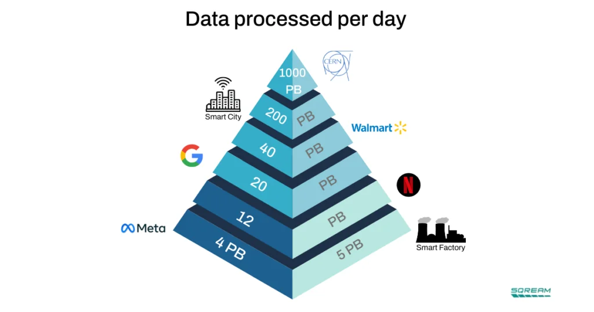

Scientific ML / A comparison with tech and industry
The hidden work
behind AI for science.
Scientific ML uses familiar algorithms under demanding constraints: costly simulations, physically structured samples, and conclusions that depend on reliable uncertainty estimates. How do these workflows compare with ML in tech and industry? The differences reach from training data to I/O, memory, and the meaning of a successful prediction.
01 / Comparing the workflows
Familiar algorithms.
Different demands.
A recommendation system may learn from clicks and purchases. A scientific surrogate may learn from simulations that must first be paid for, run on a supercomputer, and checked against physical measurements. The learning algorithm can be familiar while the surrounding job changes substantially.
Scientific ML spans climate prediction, materials design, astronomical inference, and experimental analysis. Some projects face enormous data streams; others have only a handful of expensive, high-quality examples. In both cases, the data comes from a physical system, and a useful prediction must support a defensible scientific conclusion.
| Question | Common product ML workflow | Scientific ML workflow |
|---|---|---|
| Where do examples come from? | Interactions, transactions, or content collected during a service’s operation, with additional curation and labeling. | Instruments, observations, or simulations. Obtaining independent examples can require experimental time or a computing campaign. |
| What is one sample? | A record, image, or sequence organized for a prediction task. | Possibly a 3D field, evolving trajectory, or irregular graph. Resolution, physical context, and correlations constrain batching and sampling. |
| What counts as success? | Predictive quality and service outcomes, evaluated alongside latency, cost, and other product requirements. | Predictive quality plus physical validity, uncertainty, and the effect of errors on an inferred explanation or experimental result. |
| What sets the computing cost? | Data preparation, training, serving, and communication across the system. | Those stages plus simulation or instrument processing, large structured samples, repeated physical validation, and shared HPC resources. |
These are common workflow patterns. Industrial simulation, robotics, and medical ML share many scientific constraints; large technology systems also face severe I/O and communication limits. The comparison helps identify which assumptions about data, scaling, and validation carry over to a particular scientific problem.
One example of scientific data scale: particle physics
The historical comparison below places CERN above familiar technology companies in daily data volume. It illustrates how far scientific data production can extend. At the Large Hadron Collider, trigger systems select a small fraction of collision events for storage; ML can help with selection, reconstruction, and subsequent analysis.


As a separate measure of retained data, CERN reported one exabyte of stored LHC experimental data in December 2025, accumulated over more than 15 years. Its EOS storage system had exceeded seven billion files by June 2022. These figures illustrate the scale of one scientific facility.
Across scientific fields, an archive still has to become a usable training set. Detector measurements need calibration and reconstruction; climate outputs need variables and time windows aligned; materials simulations may need conversion into atomic graphs. The layout produced by an instrument or simulation often differs from the layout needed for efficient learning.
The familiar “three Vs” of big data become practical constraints across these workflows:
- Volume
- Can the selected training set fit in memory or local storage? If it cannot, every pass depends on sustained reads from shared storage.
- Velocity
- Can the pipeline keep up with an instrument’s stream, or supply the next batch before the GPUs finish the current one?
- Variety
- Detector events, particle graphs, simulation grids, and time series need different layouts and preparation. A byte count alone misses this work.
Owning a large dataset and feeding a large training job are different achievements. The route between them is where much of the computing difficulty lives.
02 / The I/O behind every batch
Before a GPU can learn,
the data has to reach it.
“Slow data loading” hides several different problems. A filesystem can have ample capacity and impressive bandwidth while a training job still struggles to obtain its next batch.
A simulation may write complete states in time order, while training requests shuffled slices from many runs. An experimental archive may be organized for traceability and reconstruction. Adapting these outputs for ML can require another substantial data-processing step.
Follow one batch from stored scientific output to the accelerator. Each stage has its own limit; optimizing the matrix multiplication at the end does not remove the stages before it.
- 01 / LocateFind & open filesDirectory and file metadata requests
- 02 / ReadFetch chunksStorage bandwidth and access latency
- 03 / PrepareBuild the batchDecompression, transforms, graph construction
- 04 / TransferCopy to the GPUHost-to-device transfer
01 / Streaming a dataset that cannot fit in memory
Capacity does not guarantee throughput.
Terabyte-to-petabyte training sets often have to stream from disk. Each epoch reads the selected data again unless a useful working set can be cached. The limiting resource becomes the rate at which storage can deliver those bytes, shared with other readers and jobs.
Adding GPUs increases demand for ready batches. If the storage path cannot supply them fast enough, the accelerators become starved for input. A model that scales well on synthetic, already-resident data can scale poorly on the real scientific archive.
What to measure: sustained read throughput and time spent waiting for batches, as the number of training processes grows. Staging and caching help only when their capacity and reuse match the workload.
02 / Hierarchical formats and scattered reads
A small sample can trigger a much larger read.
Scientific formats such as HDF5 can hold many datasets, groups, attributes, and chunked arrays. They preserve valuable structure. But a layout designed to write a complete simulation snapshot may serve randomly selected training samples poorly.
If a requested slice touches a compressed chunk, that chunk must be fetched and decompressed. A batch scattered across many chunks can read far more data than the model uses. Dataset lookups, chunk indexing, and repeated opens add further overhead. The format alone does not determine performance: chunk shape, compression, caching, and the actual access pattern matter.
What to measure: bytes read per useful sample, chunk reuse, open/lookup time, and decompression time. Match layout to sampling; repacking data has its own storage and preparation cost.
03 / Millions of small files
The filesystem can be busy finding data.
Locating, opening, checking, and closing a file requires metadata operations. With millions of small files, a job may spend more time on these requests than moving useful bytes. Many workers issuing them simultaneously can overload a shared filesystem’s metadata service: a metadata storm.
This is a different limit from bulk bandwidth. The storage system may move large contiguous files quickly yet deliver small training samples slowly. High-rate random access for graph neural networks or transformers can amplify the problem. Simply increasing the number of data-loader workers can increase contention and batch latency.
What to measure: file-open rates and latency, metadata activity, and samples delivered per second. Larger shards and fewer repeated opens can help, provided they preserve the required sampling.
04 / Correlations versus efficient access
The order on disk is rarely the order for learning.
Simulation outputs are naturally grouped by run and time step; detector data by acquisition period. Nearby records can be strongly correlated. Reading them sequentially is efficient, but training on long runs of similar examples may give a poor mix of physical conditions. Random sampling can scatter reads across files and chunks, increasing both metadata requests and data movement.
Physical context also matters. A time sequence or connected particle neighborhood cannot always be shuffled or split arbitrarily. Training/test separation may need to happen by independent simulation run or acquisition group. The sampling policy must satisfy those scientific requirements while making I/O manageable.
What to measure: throughput under the real sampling policy, alongside correlation and leakage checks. Block or shard shuffling, bounded shuffle buffers, and prefetching are options to validate together with the science.
These are the four I/O mechanisms in slide 20. NERSC’s I/O guidance likewise emphasizes access patterns, small-file overhead, and measuring the I/O stack. Bandwidth, metadata latency, CPU preparation, and device transfer need separate measurements.
03 / Before training begins
First, you may have to
create the training data.
How did pairs of massive stars become the merging black holes we observe today?
Gravitational-wave detectors observe the mergers, long after the original stars have disappeared. To test an explanation, researchers can simulate populations of stars: vary their birth masses, composition, and interactions, evolve them, and compare the resulting black holes with observations. Each choice of physical assumptions can send us back to the simulations.
A machine-learning model can help explore this space faster. But the examples it learns from have to come from somewhere. Producing them may already require substantial computation. Checking a prediction in an unfamiliar region can require another simulation. The cost of learning includes the cost of generating the world the model learns from.
Other fields encounter this in different forms. A climate model generates evolving three-dimensional fields. An instrument produces a stream of measurements that must be calibrated. A rare-event experiment may accumulate a huge archive while providing very few examples of the signal it seeks. A lot of stored data does not necessarily mean a lot of useful training examples.
- 01GeneratePay for simulations or measurements
- 02LearnMove data & fit an approximation
- 03InferCompare physical explanations
- 04ValidateCheck against trusted calculations or data
- Simulation surrogates
- Approximate expensive physics calculations and support design optimization, with error bounds and checks for bias.
- Experimental operations
- Tune beams or detectors, identify anomalies, and anticipate maintenance needs.
- Accelerated analysis
- Process detector streams, extract features, or compress and denoise measurements within a larger analysis chain.
- Scientific inference
- Accelerate MCMC, variational inference, or likelihood-free posterior estimation on HPC systems.
For readers used to product ML, the shift is in the starting conditions. A transaction or recommendation system may learn from activity that is already happening. A scientific surrogate may need an explicitly funded simulation campaign before its first training run. Industrial systems also face expensive data and physical constraints; these pressures are especially visible when the data itself is a scientific calculation.
04 / What counts as one example?
One sample can be
a volume of space.
An “example” in scientific ML might be a three-dimensional state from a fluid or climate simulation. At every point on a grid, it stores several physical quantities. Refining the grid adds data along all three directions at once.
Consider an illustrative grid with eight quantities per cell, stored as four-byte numbers. Change the resolution below to see what happens to the memory needed for just one state.
One simulation state
32 GiB
1.07 billion cells
1,024³ cells × 8 quantities × 4 bytes
Double the resolution to 2,048 cells per direction and this becomes 256 GiB. Twice the resolution means eight times the data.
That number covers the stored physical fields alone. Training must also store the model, intermediate results from its calculations, and information used to update its parameters. A time-dependent example may contain several such volumes. Making a batch larger can be a memory problem before it becomes a question of faster arithmetic.
Now consider training on many examples, repeatedly. Each state has to be read from storage, prepared, and delivered to an accelerator. Cutting a volume into smaller pieces can help, but the pieces may lose the long-range physical context the model needs. Reducing resolution changes which physical scales are represented. These choices affect both the computation and the scientific question.
05 / Communication and compute
A thousand GPUs
can still be waiting.
Adding accelerators helps when there is useful work ready for them. In a large scientific workflow, keeping them supplied and coordinated is a substantial task of its own. The slowest part can move as the job grows.
Reading the bytes is only part of the job
Waiting for the host to prepare them
A batch may still need decompression, normalization, augmentation, graph construction, and collation into tensors. Python loops and CPU transformations over large scientific arrays can hold up delivery even when storage reads are fast. The GPU waits for work on the host computer to finish.
Moving preparation to the GPU can help some workloads, but it consumes device memory and execution time. More CPU workers can oversubscribe cores or compete for memory bandwidth. The useful question is which stage limits ready batches under the actual allocation.
What changes in the implementation?
Separate read, decompression, transformation, collation, and host-to-device timings. Vectorize repeated operations, profile worker counts, and test pinned-memory transfers or overlap where supported. Check the full timeline to see whether preparation is hidden behind training or exposed as a wait.
The workers have to agree
Waiting for the slowest process
In common distributed training setups, each GPU processes different examples, then combines parameter gradients through a collective operation such as AllReduce. That synchronization travels over a network. If one worker gets an unusually large graph, a difficult batch, or slow data access, other workers can reach the meeting point first and wait. A storage straggler has now become a communication stall.
With a fixed amount of work, more GPUs give each one less computation between exchanges. Communication can then take a larger share of the step. Increasing the batch to give every GPU more work can hit memory limits or change how the model learns.
What changes in the implementation?
Measure exposed AllReduce time, rank imbalance, and scaling efficiency. Gradient synchronization cost depends on message size, collective algorithm, network topology, and overlap with backpropagation. Balanced batches and suitable rank placement can help. Gradient accumulation can reduce synchronization frequency, but changes the effective batch and may require retuning.
The numbers have to move inside the device
Waiting for memory
Even after a sample reaches the GPU, arithmetic can be waiting on data. Some operations spend more time moving large arrays through device memory than calculating with them. Many small operations can add dispatch overhead. Large samples can limit the batch size and leave hardware less efficiently occupied.
A larger advertised arithmetic rate does not automatically shorten these waits. Sometimes the useful change is to reuse data, combine operations, reorganize arrays, or change the algorithm while preserving the physics it needs to learn.
What changes in the implementation?
Inspect CPU/GPU timelines, kernel sizes, memory bandwidth, and activation and optimizer memory. Vectorized preprocessing, fused or compiled operations, and suitable tensor layouts may help. Mixed precision needs numerical validation; activation checkpointing trades extra computation for lower memory use.
Practical background: NERSC’s I/O guidance and the PyTorch distributed data-parallel design notes.
06 / Try the speedup
Make the GPU work faster.
What happens to the job?
Give the GPU work a speedup, then watch the total step time. When data loading or communication takes most of the time, even a large improvement in GPU execution makes a modest difference to the whole step.
- Data loading 70 ms
- GPU work 20 → 5 ms
- Communication 10 ms
1.18× end-to-end speedup
GPU work is 4× faster, but the whole step falls from 100 to 85 ms. Data loading still takes 70 ms.
Illustration, not a benchmark. The model adds sequential data-loading, GPU, and communication times: T = Tdata + TGPU/s + Tcommunication. It assumes fixed work, unchanged non-GPU stages, and no overlap. Real pipelines overlap stages and require profiling; this estimates step time, not time to scientific convergence.
07 / When a prediction becomes evidence
A small error can change
the scientific answer.
The computation does not end when the predictions look convincing.
Return to the black-hole example. Suppose a surrogate systematically underestimates how often one kind of stellar population produces a merger. An inference procedure using that surrogate may compensate by favoring a different population. The fit can look good while the inferred stellar history has shifted.
Average prediction error might barely change if that population occupies a small part of the test set. Yet that region can matter greatly to the physical conclusion. This is why scientific validation asks where errors occur, what they do downstream, and whether the reported uncertainty still means what it claims.
More stored examples may not give an independent test
Neighboring snapshots from one simulation share a history. Putting some in training and others in a test set can make generalization look easier than it is. Testing on independent runs or new physical conditions can mean generating more expensive data.
The rare cases can be the important ones
A small signal, an unusual event, or an extreme physical regime may drive the discovery. Denoising, compression, and sampling can improve throughput while altering precisely those cases. Their effect has to be checked through the analysis.
Confidence in a surrogate is not confidence in the simulator
A learned model can reproduce a simulation faithfully and inherit its missing physics. Measurement noise, uncertain parameters, simulator assumptions, and approximation error need separate attention. Independent measurements and trusted calculations remain part of the work.
What does this mean for inference?
Test downstream parameter bias and use suitable coverage or simulation-based calibration checks alongside posterior predictive checks; they answer different questions. A surrogate substituted into a likelihood can change the sampled posterior. A surrogate used to propose MCMC moves can preserve the original target when acceptance uses the exact likelihood and the appropriate proposal correction.
08 / The cost of a discovery
Count the work
around the model.
ML can make previously impractical scientific work possible: exploring more physical models, processing detector streams, guiding experiments, or replacing repeated expensive calculations. Realizing that promise means accounting for the computation around every prediction.
That accounting changes the comparison with a familiar product ML workflow. Scientific training data may itself be a computational result. The size of a sample can be set by the physical system. And testing the model may require running the expensive calculation it was built to accelerate.
| A familiar next step | The scientific question behind it | Where computation enters |
|---|---|---|
| Get more examples | Can we generate independent cases in the physical regime that matters? | Simulation campaigns, instrument time, calibration, and storage. |
| Use a larger batch | Can the sample be made smaller without losing essential physical structure? | Device memory, resolution, context, and data movement. |
| Add more GPUs | Can we supply and balance enough useful work? | Shared I/O, communication, synchronization, and allocation cost. |
| Accept a lower test error | Does it preserve the physical conclusion and its uncertainty? | Independent validation and repeated downstream inference. |
These constraints also appear in industrial simulation, robotics, medicine, and other demanding ML applications. The useful comparison is between workflows and their requirements.
A millisecond prediction can sit on top of a long chain of simulations, data transfers, coordinated computation, and physical checks. Understanding that chain is how we decide which acceleration will actually bring a discovery closer.
Continue exploring
Sources & further reading
Adapted from slides 19–24 of my December 2025 presentation on ML in scientific workflows. Slide 19 supplies the use cases; slide 20 the CERN comparison, three-V framing, and four I/O mechanisms; slides 21–22 the communication and compute constraints; slides 23–24 the system-level design and science/industry comparison. Particle physics provides one example of scientific data scale. The historical SQREAM graphic retains its original branding and the credit given in the slides; the archive milestone is a separate CERN measurement. The stellar-population example is a conceptual illustration, not a report of a measured result. The grid-memory calculation, allocation example, and timing budgets are illustrative, rather than measurements of NERSC workloads.
- CERN: one exabyte of stored LHC experimental data ↗17 December 2025. A cumulative archive milestone, distinct from daily processing volume.
- CERN: storage ↗Trigger selection, disk and tape, and the distinction between raw streams and retained data.
- Machine learning at NERSC ↗Frameworks, distributed training, and facility guidance.
- NERSC: I/O resources and best practices ↗Access patterns, small files, and profiling scientific I/O.
- PyTorch: distributed data-parallel design ↗Gradient synchronization, buckets, and communication overlap.
- Cranmer, Brehmer & Louppe: The frontier of simulation-based inference ↗How simulation and machine learning meet in scientific inference.